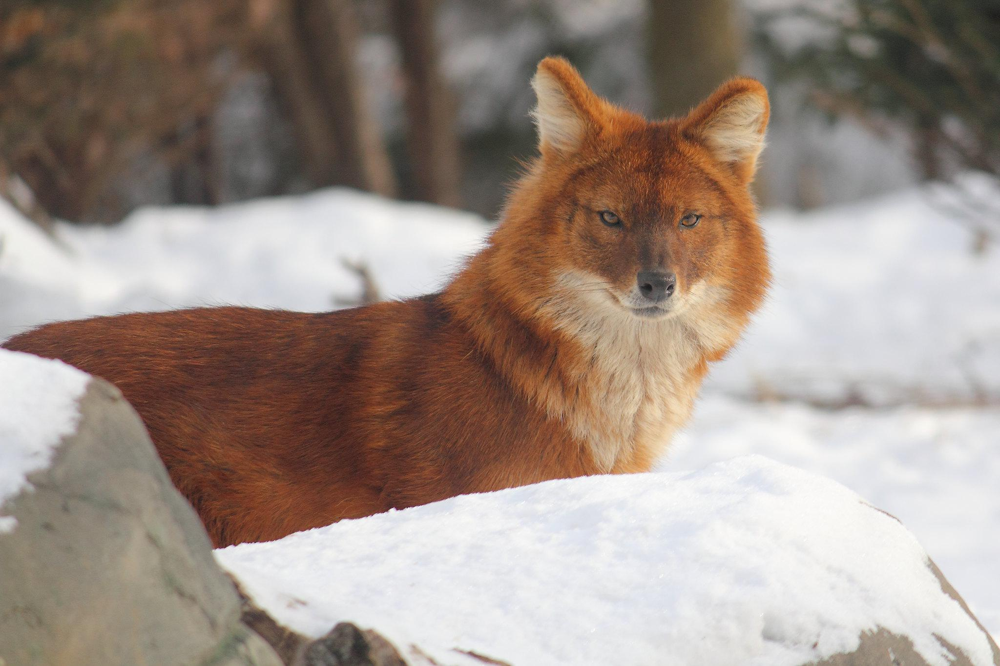
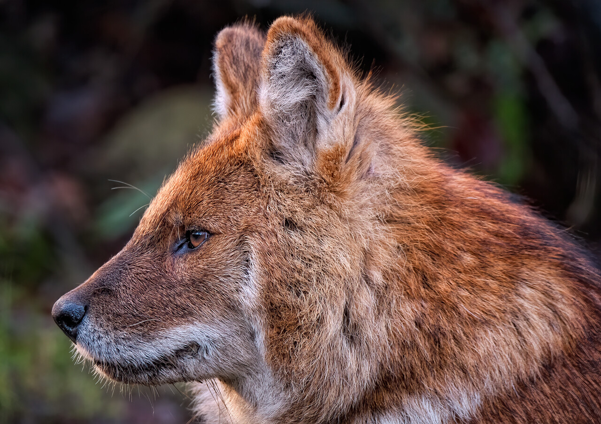

The dhole, also known as the Asiatic wild dog, is an endangered species of wild dog native to South and Southeast Asia. They can be found in many different environments, including forests, shrublands, and mountains. They are roughly the size of a German shepherd, measuring at 3 feet long and weighing 26-44 pounds. Their appearance is fox-like, and yet, their DNA is most similar to that of the African wild dog.They are hypercarnivores, meaning that at least 70% of their diet is meat. Included in their diet are deer, wild pigs, buffalo, and wild goats.
Dholes live in packs that consist of an average of 5-12 individuals, usually with a single breeding pair among them. When the mother is nursing pups, the rest of the pack will bring back food for her. Dholes communicate with a wide variety of sounds, including yaps and growls, but they are most famous for their distinct whistle!